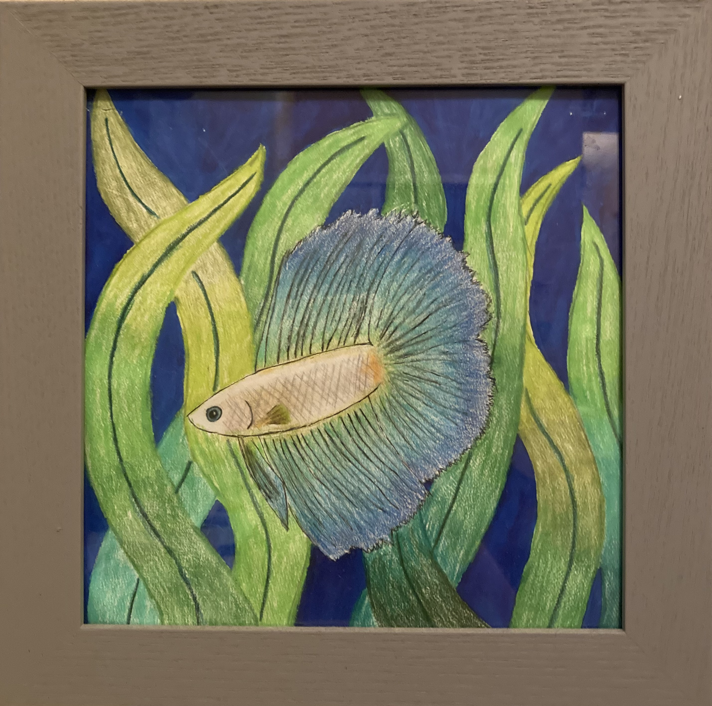

|  |
Date: Spring 2019
Mediums: Colored Pencils, Watercolor, Micropen
A drawing made by referencing a photo of a similarly colored betta fish. The gradient of its fins was my own addition, as was the seaweed background. This piece was mostly about learning how to blend colored pencil shading better.
|